Pre-training vs Post-training
Pre-training (사전학습)
방대한 텍스트 데이터를 이용한 Self-supervised learning을 통해 언어 패턴, 지식 등을 배운다.
- 학습 목표: 다음 단어 예측 (Next Token Prediction)
- 예시: "내일은 비가 ___" → "온다"의 확률을 가장 높게 만들도록 파라미터 업데이트
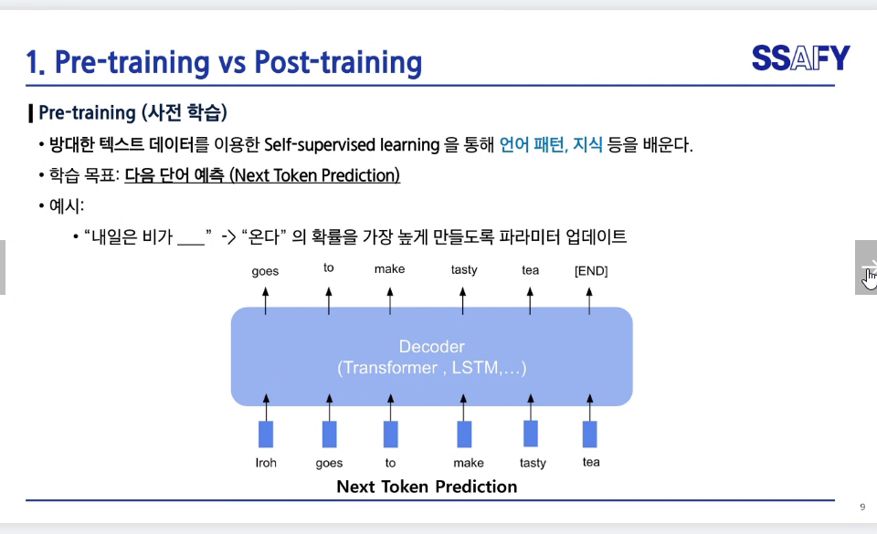
Post-training (사후학습)
유저의 의도를 파악하고 원하는 답변을 모델이 응답하도록 사후 학습을 진행한다.
- Instruction-tuning
- RLHF (Reinforcement Learning from Human Feedback)
- DPO (Direct Preference Optimization)
- RLVR (Reinforcement Learning with Verifiable Reward)
Pre-training만 거친 모델의 한계
PROMPT: "달 착륙을 6살 어린이에게 몇 문장으로 설명해줘."
| Pre-training만 (GPT-3) | Post-training 거친 모델 (Human 답변형) |
|---|---|
| 질문을 잇는 비슷한 질문들을 계속 생성할 뿐, 실제 답변을 하지 않음 (예: "중력 이론을 6살 어린이에게 설명해줘." 등 반복) | 거대한 로켓이 지구에서 우주비행사들을 태우고 달로 날아갔다는 식으로 실제 요청에 맞는 답변을 생성 |
→ 사전학습 후 거대 언어모델은 유저의 의도와 일치하지 않음. 이를 해결하기 위해 파인튜닝(Post-training)을 진행.
Instruction-tuning
Instruction-tuning이란?
언어모델이 사람이 내린 지시문(instruction)을 따르도록 학습하는 단계. 정답 레이블이 요구되며, 다양한 태스크를 풀 수 있도록 적응하는 것에 중점을 둠.
| Step 1: Pretrain | Step 2: Finetune (Instruction-tuning) | |
|---|---|---|
| 목표 | 일반적인 언어 지식 학습 (Lots of text) | 많은 태스크에 적응 (Not many labels per task) |
| 입력형태 | … the movie was … | 다양한 태스크의 (지시문, 응답) 쌍 |
즉, 다양한 태스크에서 (지시문, 응답) 쌍을 모아서 언어모델을 파인튜닝한다. 학습에 사용되지 않은 새로운 태스크에서도 평가를 진행한다 (Zero-shot generalization).
(참고) 파인튜닝(Fine-tuning) 이란? — 더 넓은 개념
이미 사전 학습된 기존 모델에 특정 작업이나 도메인에 맞게 추가로 학습시키는 과정. Instruction-tuning은 이 파인튜닝의 한 종류다.
Instruction-tuning 구체 예시 — Flan-T5
Flan-T5 [Chung et al., 2022] — 다양한 태스크에서 (지시문, 응답) 쌍을 모아 언어모델을 파인튜닝하는 방식의 대표 사례.
| 학습에 사용한 태스크 예시 | 학습에 없던 새로운 태스크로 평가(Zero-shot) |
|---|---|
| "Please answer the following question. What is the boiling point of Nitrogen?" → "-320.4F" / "Answer by reasoning step-by-step. The cafeteria had 23 apples..." → 단계별 풀이로 정답 도출 | "Can Geoffrey Hinton have a conversation with George Washington? Give the rationale." → "Geoffrey Hinton은 1947년생, George Washington은 1799년 사망 → 대화가 불가능하므로 답은 'no'" |
더 많은 태스크를 가진 데이터 학습
- 대부분의 경우와 마찬가지로, 데이터와 모델의 크기가 핵심
- Super-NaturalInstructions 데이터셋은 1.6K+ 태스크, 3M+ 예시로 구성
질문: 이러한 데이터로 학습한 거대 언어모델은 어떻게 평가해야 하는가?
평가 벤치마크: MMLU
Massive Multitask Language Understanding (MMLU)
- 57개의 지식을 요구하는 태스크에서 언어모델의 성능을 평가하는 벤치마크
- 천문학·생물학 등 다지선다형 문제로 구성
예시(천문학): "Type-Ia 초신성에 대해 옳은 것은? A.쌍성계에서 발생 B.젊은 은하에서 발생 C.감마선 폭발을 낸다 D.많은 양의 X선을 낸다"
K-MMLU: 한국 문화·법·지역 지식을 다루는 한국어 버전 벤치마크 (Son et al., 2024) — 예: "한강 둔치에서 열리는 대표적인 여름 축제는?", "한국채택국제회계기준(K-IFRS)하에서 금융자산으로 분류되지 않는 것은?"
MMLU에서의 발전 & 최근 거대 언어모델 벤치마크
지식 중심 벤치마크에서 GPT-2(약 25%) → GPT-3/UnifiedQA → Chinchilla/Gopher → Flan-PaLM → GPT-4 → Gemini Ultra(CoT@32, 90.0%)까지 빠르게 성능이 향상되어 왔다.
| Claude 3 Opus | Claude 3 Sonnet | GPT-4 | Gemini 1.0 Ultra | |
|---|---|---|---|---|
| MMLU (대학 수준 지식) | 86.8% | 79.0% | 86.4% | 83.7% |
| GSM8K (초등 수준 수학) | 95.0% | 92.3% | 92.0% | 94.4% |
| HumanEval (코드) | 84.9% | 73.0% | 67.0% | 74.4% |
Meta Llama 3 Instruct 8B는 MMLU 68.4 / GSM-8K 79.6으로 동급(7B) 모델인 Gemma·Mistral을 크게 상회, 70B는 MMLU 82.0으로 Gemini Pro 1.5(81.9)·Claude 3 Sonnet(79.0)과 견줄 수준
지시 기반 Fine-tuning의 효과 (대명사 해석 문제 예시)
| Fine-tuning 이전 | Fine-tuning 이후 |
|---|---|
| "기자와 세프가 그들이 좋아하는 요리를 논의할 것입니다."라는 문장은 애매하다면 "애매하다"라고 답하라는 지시를 따르지 못함 — 여러 보기를 나열만 함 (❌) | "거자와 세프의 그들이 좋아하는 요리에 대해 논의할 것입니다."라는 문장은 누가 좋아하는 요리인지 명확히 나타내지 않기 때문에, 정답은 (C) 애매하다로 명확히 응답 (✅) |
이로부터 배운 것 — 데이터 예시
Alpaca: LLaMA 7B 모델을 52K개의 instruction-following 데이터로 파인튜닝 [Wang et al., 2022]
| 출처(Source) | 예시 개수 |
|---|---|
| 과학·기술·공학·수학(STEM) Q&A | 200 |
| STEM 이외 주제 Q&A | 200 |
| 생활·팁·방법론 How-to 데이터 | 200 |
| Reddit r/WritingPrompts | 150 |
| 자연어처리 태스크 설명 데이터셋 | 50 |
| 논문 저자들이 직접 작성한 예시 | 200 |
예: Instruction "회의실을 디자인하기 위한 창의적인 아이디어를 브레인스토밍하시오." → Output "…가변형 벽과 가구 같은 유연한 요소를 활용하는 아이디어 포함…"
이로부터 배운 것 — 데이터 요구량
Instruction-tuning에는 Pre-training에 비해 훨씬 적은 데이터가 필요함 (예: "LIMA: Less is More for Alignment", Zhou et al. 2023)
LIMA(단 1000개 예시로 학습)가 사람 평가에서 Alpaca 65B·DaVinci003·BARD·GPT-4(4월) 등과 우열을 가리기 어려운 수준의 win-rate를 보임.
| 비교 상대 | LIMA 승리 | 동률 | LIMA 패배 |
|---|---|---|---|
| Alpaca 65B | 53% | 21% | 26% |
| DaVinci003 | 44% | 21% | 35% |
| BARD (April) | 33% | 25% | 42% |
| Claude (April) | 24% | 22% | 54% |
| GPT-4 (April) | 18% | 25% | 57% |
RLHF (Reinforcement Learning from Human Feedback)
Instruction-tuning의 한계
"정답 데이터를 수집하는 것이 비싸다"는 명확한 한계 말고도 다른 문제들이 있다:
- 문제 1: 개방형/창의적 생성과 같은 태스크에는 정답이 존재하지 않는다 (예: "개와 개가 기르는 메뚜기에 대한 이야기를 만들어줘")
- 문제 2: 언어 모델링은 모든 토큰 레벨의 오류를 동일하게 취급하지만, 어떤 오류는 다른 오류보다 심하게 작용한다
- 문제 3: 사람이 만든 답변(정답 레이블)이 최적이 아닐 수 있다
→ Instruction-tuning을 하더라도, 언어모델의 목표(LM objective)와 "인간의 선호를 만족시키는 것" 사이에는 여전히 불일치가 존재한다.
인간의 선호도(Human Preference)란?
- 단답형: "상대성 이론을 발표한 과학자는 누구인가?" → "알베르트 아인슈타인" (정답 명확)
- 주관식: "아인슈타인이 오늘날 살아있다면, 현대 과학기술에 어떤 기여를 했을까?" (정답 없음 — 응답의 스타일·품질에 대한 선호가 갈림)
주관식 질문엔 "정답"이 없다 — 실제 4개 LLM 비교
같은 주관식 질문("아인슈타인이 오늘날 살아있다면?")에 대해 서로 다른 모델이 서로 다른 스타일·내용으로 답한다 — 어느 쪽이 "더 나은 답"인지는 사람의 선호(preference)에 달려 있다.
| Claude Sonnet 4 | Gemini 2.5 Flash |
|---|---|
| "양자컴퓨팅과 양자정보학 분야에서 혁신적 기여를 했을 것" — 양자암호학·양자통신, 중력파 검출, 블랙홀 물리학 연구 참여 가능성 등을 구체적으로 서술 | "통일장 이론을 완성하고 양자역학과 상대성 이론을 통합하는 데 기여했을 것" — 네 가지 기본 힘을 하나로 통합하는 '모든 것의 이론' 완성에 주력했을 것으로 서술 |
Copilot·GPT-5 등 다른 모델들도 각기 다른 강조점(GPS·상대성이론의 실용적 영향 vs 다중우주·암흑물질 등)으로 답변 — 정답이 없는 질문이기에 리워드 모델도 결국 "사람이 어떤 스타일을 선호하는가"를 학습하게 됨
보상을 점수로 상상하기
언어모델을 학습한다고 가정했을 때 (e.g., 요약 태스크), 어떤 지시문 x와 언어모델의 응답 y가 있을 때, 해당 응답에 대한 인간이 준 보상(human reward)을 얻을 수 있다고 상상해보자:
언어모델의 응답 중 기대 보상(expected reward)을 최대화 하는 것을 목표로 한다:
예: 뉴스 요약 태스크에서 같은 원문 x에 대한 두 요약 y₁, y₂ 중 사람이 y₁에 8.0점, y₂에 1.2점을 준다면 R(x,y₁)=8.0, R(x,y₂)=1.2 — 이렇게 점수가 매겨진다고 "상상"한 뒤, 이 기대 보상을 최대화하도록 언어모델을 학습시키는 것이 RLHF의 목표
Intuition: Human-in-the-loop ML
사람이 매긴 Labeled Data → 모델 학습(Training Model) → 헷갈리는 데이터 선별(Selecting Confusing Data) → 다시 사람이 라벨링, 의 순환 구조.
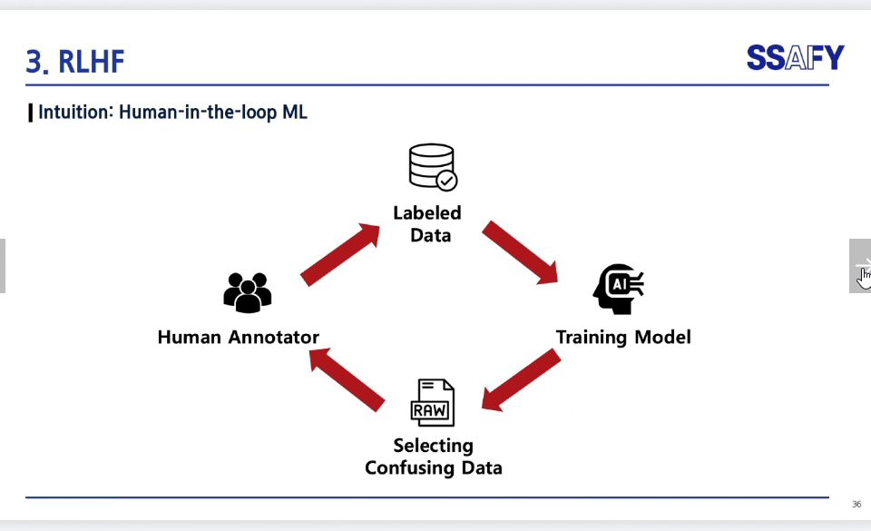
인간의 선호도를 어떻게 모델링 할 것인가?
- 문제: 인간의 판단은 일관성이 떨어지고, 기준이 어긋날 수 있다
- 해결 방법: 직접 점수를 매기지 않고, 응답을 비교(pairwise comparison)하는 방식을 활용
- 해당 비교 데이터로 리워드 모델(Reward Model)을 학습시키게 된다
예: y₁, y₃, y₂ 세 응답 중 사람이 보기엔 y₂ > y₁ > y₃ → 비교 결과가 리워드 모델 학습의 데이터가 됨
yw = winning sample(더 선호되는 응답), yl = losing sample. yw가 yl보다 높은 점수를 받도록 학습.
구체 예 (샌프란시스코 지진 요약): Human preference y₂ > y₁ > y₃ → Pairwise label 3쌍 (y₂>y₁, y₁>y₃, y₂>y₃)으로 분해 → Loss = −Σ log σ(RM(x,y₂)−RM(x,y₁)) − log σ(RM(x,y₁)−RM(x,y₃)) − log σ(RM(x,y₂)−RM(x,y₃)) 를 최소화하도록 리워드 모델 학습
어떻게 최적화 할 것인가? — 강화학습
- 강화학습(RL) 분야는 오랫동안 이론적/관련된 문제들을 연구해 왔음
- 2013년 전후로, RL이 딥러닝과 게임 플레이에 적용되면서 다시 급증 (예: AlphaGo)
- 언어모델에 RL을 적용하려는 관심은 비교적 최근인 2019년부터 이루어짐 [Ziegler et al. 2019, Stiennon et al. 2020, Ouyang et al. 2022]
- 언어모델에 적용될 수 있는 RL 알고리즘: PPO (Proximal Policy Optimization) [Schulman et al., 2017]
RLHF는 pre-training·instruction-tuning보다 더 나은 성능 향상 제공
모델 크기(1.3B~12.9B)에 관계없이 human feedback 기반 정책 pRL(y|x)이 Reference summaries 대비 선호율에서 가장 높음:
pRL > pIFT > pPT (RL 학습 > Instruction fine-tuned > Pretrain only)
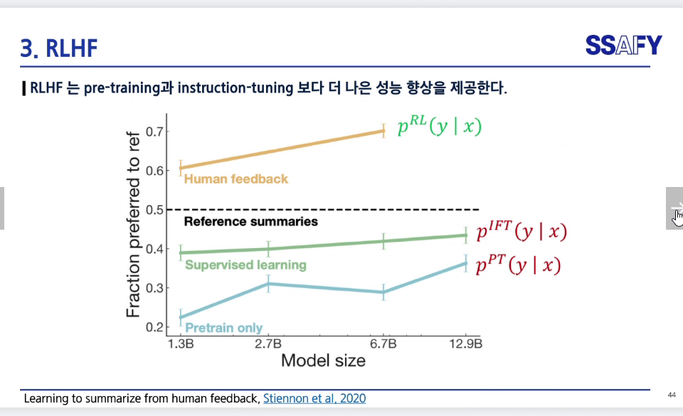
Learning to summarize from human feedback, Stiennon et al. 2020
RLHF 파이프라인 큰 그림
| 1단계 | 2단계 | 3단계 |
|---|---|---|
| Instruction-tuning (시범 데이터 수집 및 감독 학습) | 비교 데이터 수집 및 보상 모델 학습 | 강화학습(PPO)으로 정책 최적화 |
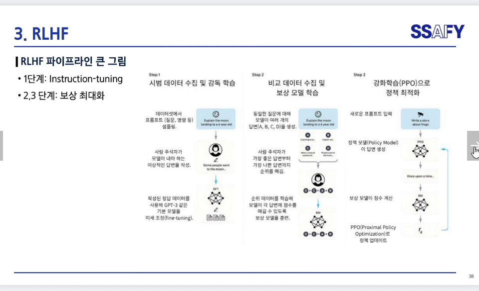
ChatGPT: Instruction-tuning + RLHF를 통한 발전에 힘입어 거대언어모델 중 처음으로 상업적으로 활용되었음
주의점: 리워드 해킹(Reward Hacking)과 환각(Hallucination)
- 리워드 모델이 잘 작동하는지 먼저 확인해야 한다 — 충분히 많은 데이터로 학습한 큰 리워드 모델일수록 인간 평가 수준에 근접함
- 인간의 선호도는 일관성이 부족함
- 리워드 해킹(Reward hacking)은 강화학습에서 자주 발생하는 문제이다
- 챗봇들은 정답의 여부와 관계없이 생산적이고 도움이 되어 보이는 정답을 생성하게 된다
- 이러한 결과들은 환각(Hallucination) 문제를 발생시키게 된다
- 인간의 선호도를 학습한 리워드 모델은 더 일관성이 부족함!
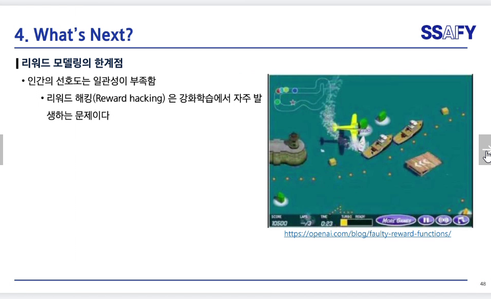
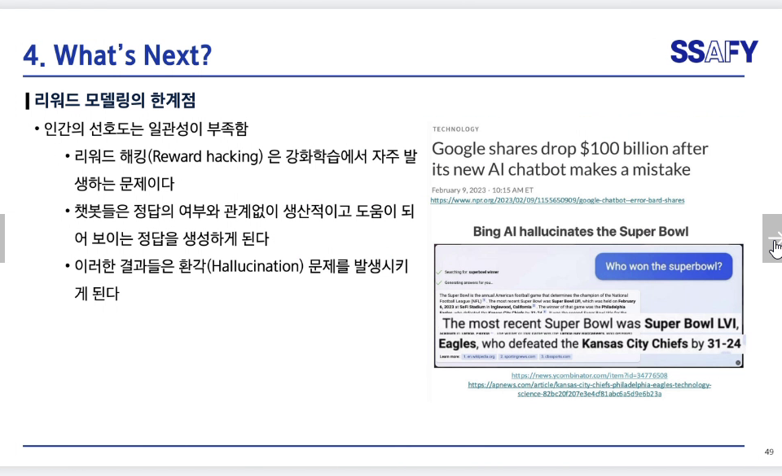
사례: Google Bard가 첫 데모에서 사실오류를 만들어 주가 $100B 하락 / Bing AI가 슈퍼볼 우승팀을 잘못 답변
What's Next — DPO · RLVR
DPO (Direct Preference Optimization)
RLHF에서 'RL'을 제거하자! [Rafailov et al. 2023]
| RLHF | DPO |
|---|---|
| preference data → reward model 학습 → sample completions → 강화학습으로 LM policy 업데이트 | preference data → maximum likelihood로 final LM 직접 학습 (보상모델·강화학습 불필요) |
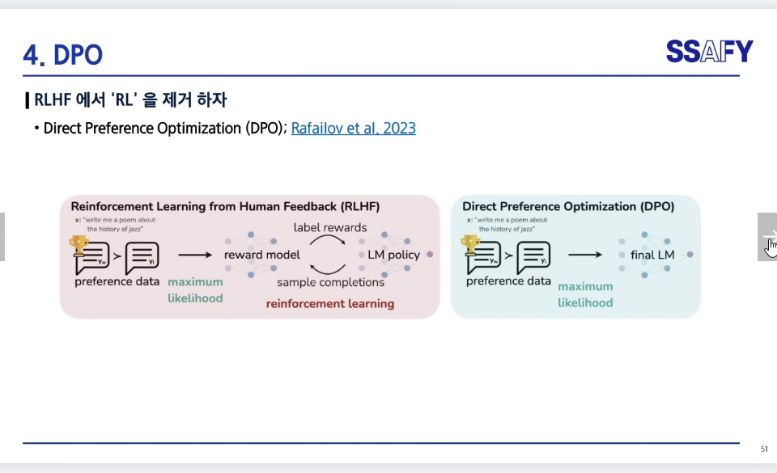
RLVR (RL with Verifiable Reward)
RLHF에서 수학 문제와 같이 답이 분명한 문제들은 정답 여부로 리워드를 주자 [Lambert et al. 2024, Deepseek-AI 2025]
0 otherwise }
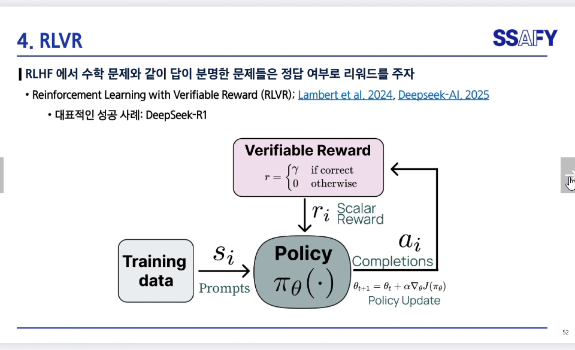
대표적인 성공 사례: DeepSeek-R1 — Training data(prompts) → Policy πθ → Completions → Scalar Reward r → Policy Update
📌 1차시 강의 정리
- Pre-training (사전학습): 인터넷 텍스트 등 대규모 비라벨 데이터로 언어의 구조와 지식을 학습
- Post-training (사후학습): 사전학습된 모델을 사람의 의도에 맞게 조정하는 단계 — 대표 방식: Instruction-tuning(지시학습), RLHF(인간 피드백 기반 강화학습)
- Instruction-tuning: Fine-tuning의 한 종류로, 사람이 작성한 지시문(instruction)-응답(output) 쌍으로 지도학습(Supervised) → 모델의 명확한 태스크 수행 능력 습득. 데이터셋 예시: Super-NaturalInstructions, Alpaca, Flan-T5 등
- RLHF란? 인간의 피드백(Human Feedback)을 통해 언어모델이 '사람이 선호하는 답변'을 학습하는 방법. 한계점: Reward Hacking 발생, Hallucination(환각) 발생
- RLHF 이후의 진화: 1) DPO — RL(강화학습)을 제거, 사람의 선호 데이터를 직접 확률 최적화 / 2) RLVR — 인간 피드백 대신 정답 검증이 가능한 문제에서 자동으로 보상을 계산하는 방식
Retrieval-augmented LM 기본개념 & Information Retrieval
Retrieval-augmented LM 이란?
추론 시 외부 데이터 저장소를 불러와 활용하는 언어모델.
| Typical LM (Training/Test 동일) | Retrieval-based LM (Test time) | |
|---|---|---|
| 동작 | "The capital city of Ontario is ___" → LM만으로 예측 | Datastore를 조회하여 "The capital city of Ontario is ___" 예측에 활용 |
Datastore → Query → Index → Language Model (+ Input)
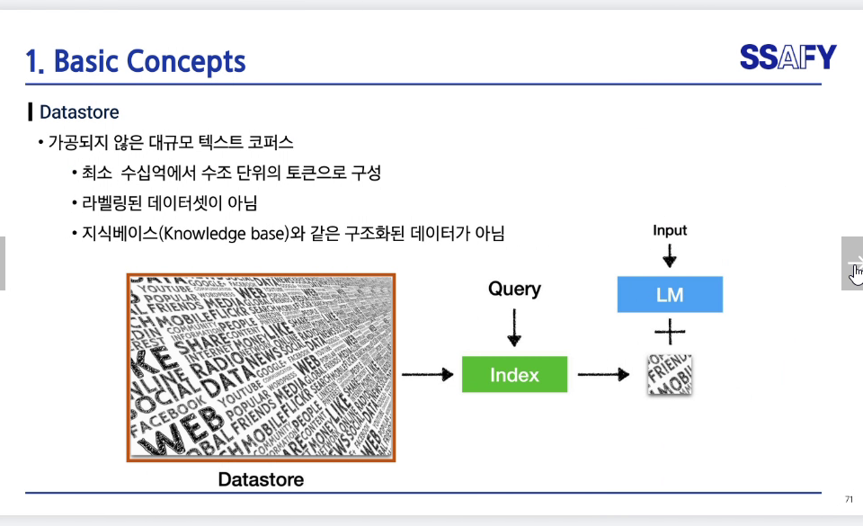
Datastore / Query / Index / Retrieval
- Datastore: 가공되지 않은 대규모 텍스트 코퍼스. 최소 수십억~수조 단위 토큰. 라벨링된 데이터셋도, 지식베이스(구조화 데이터)도 아님
- Query(쿼리): 검색 질의/Retrieval input. 언어모델의 질의(input)와 같아야 하는 것은 아님
- Index(인덱스): 문서·단락 같은 검색 가능한 항목들을 체계적으로 정리하여 더 쉽게 찾을 수 있도록 함
- Retrieval(검색): Datastore의 수많은 정보 중, 주어진 쿼리와 가장 관련성이 높은 정보를 찾아내는 과정
Retrieval-augmented Generation (RAG)
사용자의 질문에 답하기 위해, datastore에서 관련 정보를 검색(Retrieval)해와서, 이를 언어모델이 생성(Generation) 단계에 함께 활용하는 방법.
예: "Who is the president of the US?" → Retriever가 Wikipedia에서 "Joe Biden is the 46th and current president..." 문서를 검색(Memory: 새 도메인·뉴스로 지식 확장·갱신 가능) → Generator가 이를 근거로 "Joe Biden" 답변 생성(근거 문서를 함께 제시해 Interpretability 확보)
Information Retrieval(정보검색) 이란?
- 정보검색(IR): 사용자의 질의(Query)에 맞는 정보를 대규모 데이터에서 찾아 제공하는 과정
- 주요 목표는 사용자의 검색 질의(Query)에 가장 관련성이 높은 정보를 제공하는 것
- 예: "녹차의 효능?" 질문 → IR이 관련 문서를 찾아 제공
Retriever 종류: Sparse vs Dense
| Sparse Retriever (어휘적 유사도) | Dense Retriever (의미적 유사도) | |
|---|---|---|
| 방식 | 전통적 IR 기법. 쿼리-문서 간 정확한 용어 일치에 기반 | 쿼리와 문서를 표현하기 위해 dense vector(embeddings)를 활용, 의미에 기반 |
| 예시 | TF-IDF, BM-25 | DPR, Contriever, OpenAI-embeddings 등 |
문서 내 특정 단어의 중요도를 나타내는 가중치 방식.
TF = 문서 안에서 자주 등장하는 단어는 중요 / IDF = 너무 많은 문서에 등장하는 단어는 덜 중요 ("this, is, and" 처럼 IDF값이 낮아져 가중치가 0에 가까워짐)
| 장점 | 단점 |
|---|---|
| 단순성(구현 쉬움) · 효율성(inverted index로 빠른 검색) · 투명성(용어 매칭 기반이라 설명 명확) | 제한된 의미 이해 — 쿼리 "Who is the bad guy in the movie lord of the rings?"와 문서의 "Sala Baker is best known for portraying the villain Sauron..."이 실제로는 같은 뜻이어도 매칭되지 않음 |
Dense Retriever — 임베딩 모델
임베딩 모델(e.g., BERT)은 단어/문장의 의미를 벡터 공간에 표현할 수 있음.
대조 학습(contrastive learning)으로 학습, 쿼리가 긍정 문서와는 가깝게, 부정 문서와는 멀어지게 유도. 두 문장을 따로 인코딩 → 매우 빠름, 대규모 검색에 적합, 정확도는 상대적으로 낮음
예: Query "When was Dubai founded?" + Document 1(정답 문서) → Positive pair로 가깝게, + Document 2("New York is the most populous...", 무관 문서) → Negative pair로 멀게. Loss = −log[ exp(sim(q,p⁺)) / (exp(sim(q,p⁺)) + Σexp(sim(q,pⱼ⁻))) ]를 최소화
"query [SEP] document" 형태로 두 텍스트를 하나의 시퀀스로 결합해 self-attention으로 완전히 상호작용 → 정확도 높으나, 모든 쿼리-문서 쌍을 개별 입력해야 하므로 계산 비용이 크고 느림
예: "Query: When was Dubai founded? + Document 1" → Score 0.8 / "...+ Document 2" → Score 0.4 처럼 쿼리-문서 쌍마다 개별적으로 관련도 점수를 계산
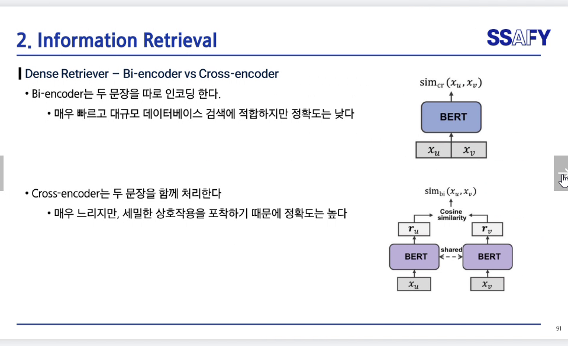
Dense Retriever 장·단점
| 장점 | 단점 |
|---|---|
| 의미적 이해(동의어·다양한 표현 처리) · 풍부한 쿼리 표현(복잡하고 긴 질의도 잘 포착) | 높은 연산 비용 · 제한된 투명성(블랙박스적) · 데이터/모델 의존성(학습 데이터 품질에 크게 영향받음) |
Retrieval-augmented LM — 필요성·한계와 대응
Why Retrieval-augmented LM?
- 거대언어모델은 모든 지식을 다 파라미터에 저장하지 못한다 — pre-training 데이터에 자주 나타나는 쉬운 정보를 기억하는 경향이 있음 [Kandpal et al. 2022]. 자주 등장하지 않는 정보에 RAG가 큰 효과.
- 거대언어모델이 보유한 지식은 금세 시대에 뒤쳐지며, 갱신이 어렵다 — 지식 편집(knowledge editing) 메서드들은 확장성 부족. 반면 저장소(Datastore)는 쉽게 업데이트 가능
- 거대언어모델의 답변은 해석과 검증이 어렵다 — RAG는 근거(reference to source) 문서를 함께 제공해 해석 가능성(Interpretability) 확보
- 기업 내부 정보와 같은 보안 정보는 언어모델 학습에 활용되지 않음 — 사내 챗봇/기업 시스템에 LLM을 학습시키면 정보 유출 위험이 있으므로, RAG로 학습 없이 내부 지식 활용
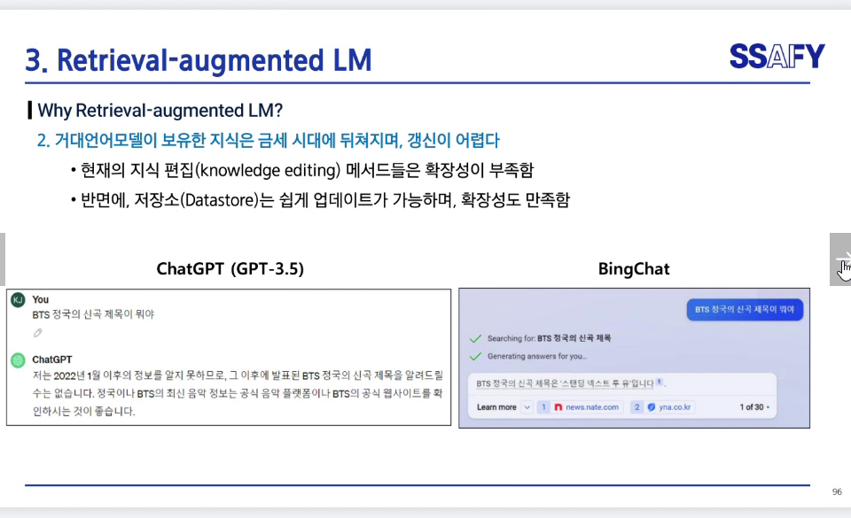
Retrieval-augmented LM 파이프라인
① 질의 추출 (LM이 원 질문에서 검색용 질의 Q 생성) → ② 문서 검색 (Retriever가 World Knowledge에서 Evidence 검색) → ③ 언어모델 추론 (Evidence + Query로 최종 Answer 생성)
대표 프레임워크: LangChain — Chunk of text(document) → Embeddings → Semantic Search → Ranked Results → LLM → Answer
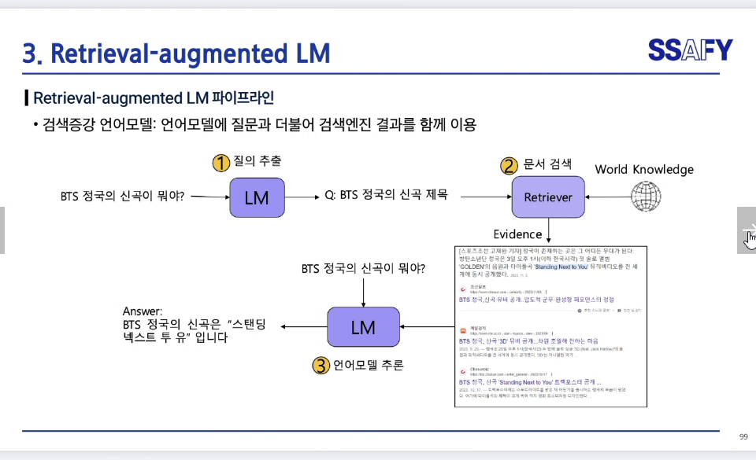
Challenge 1. Context를 어떻게 구성해야 하는가?
→ Solution: 언어모델의 컨텍스트 길이(Context length)를 늘려야 한다. (Position embedding, Efficient inference, Fine-tuning on long context 등)
Claude 3 모델들은 200K context window / Gemini 1.5 Pro는 128,000 token context window 제공
Challenge 2. RAG 결과는 검색 모델 성능에 의존 — 검색 노이즈
정확하지 않은 유사 정보가 언어모델이 답하는 것을 방해할 수 있음. Transformer의 어텐션 레이어에서 컨텍스트 내 단어 벡터들이 가중합되어 다음 단어 예측에 활용되는데, 이때 가중치가 0과 1사이 값이므로 컨텍스트 정보를 무시하기 어려움 → 정보검색만으로는 사실의 정확성 보장 X
| Noise Robustness | Negative Rejection |
|---|---|
| 검색된 문서에 노이즈(관련 없는 정보)가 섞여 있어도 올바른 정보를 식별하고 정답 생성 (예: 2022 수상자 질문 시 관련없는 2021년 수상자 문서가 섞여도 정답 "Annie Ernaux" 도출) | 검색된 문서에 정답 정보 자체가 없을 때, 추측하지 않고 "문서에 관련 정보가 없어 답변할 수 없어요" 라고 명확히 거부 |
Noise Robustness 예: "Saratoga는 캘리포니아에 있는 도시입니다..." 컨텍스트에서 "산호세 시장 Sam Liccardo는 어느 도시에서 태어났나요?" 질문 시, Text-davinci-003·GPT-3.5 Turbo·LLaMA-2-70B-chat 모두 컨텍스트를 정확히 반영해 "Saratoga"(또는 컨텍스트가 "Sunnyvale"로 바뀌면 "Sunnyvale")로 정확히 답변 — 노이즈가 아닌 정답 컨텍스트 자체가 바뀌어도 모델이 이를 잘 따라감
Negative Rejection 예: "2022년 노벨 문학상 수상자는?" 질문에 검색된 문서가 2021년(Abdulrazak Gurnah)·2020년(Louise Glück) 수상자 정보뿐이라면, RAG는 추측하지 않고 "문서에 2022년 정보가 없어 답변할 수 없어요"라고 명확히 응답
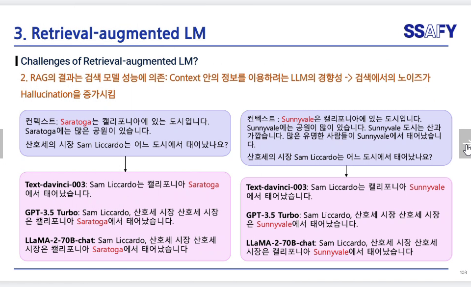
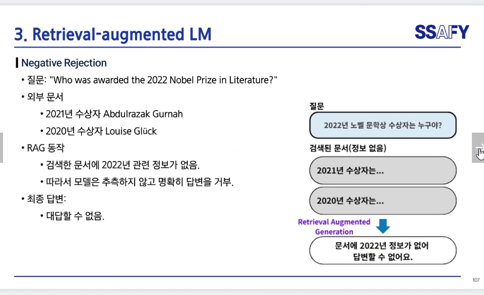
Challenge 3. LLM의 사전지식과 컨텍스트 간의 충돌(Conflict) 발생
예: "Who is the most paid player in EPL?" — Context에는 Kevin de Bruyne이 근거로 제시되어 있지만, LLM의 사전지식(Cristiano Ronaldo)과 충돌할 수 있음.
| Solution 1: Context 위에서 Grounding 학습 강화 | Solution 2: Context가 없을 때, 답변 회피/거절 학습 |
|---|---|
| "Instruction: Ignore what you know and generate an answer based only on the given context." → Answer: Kevin de Bruyne (Context 기반 정답 생성) | 관련 Context가 없는 경우(예: 관련없는 Dodgers 계약 기사) → "I'm sorry, I cannot provide specific information about ..." 로 명확히 회피 |
Challenge 4. 복잡한 추론 필요 & 문서가 명확한 사실에 대한 오류를 포함할 때
| Information Integration | Counterfactual Robustness |
|---|---|
| 여러 외부 문서에 흩어진 정보를 통합해야 정답 도출 가능 (예: ChatGPT iOS 출시일 - 여러 문서 정보를 종합해야 "5월 18일과 3월 1일"처럼 정확히 답할 수 있음) | 외부 문서에 반사실적(counterfactual) 정보가 포함된 경우(예: 조작된 올림픽 발상지 문서), 이를 식별하지 못하면 "제공된 문서에는 사실 오류가 있어 정답은 애매합니다"와 같이 명확히 인지하지 못하는 문제 발생 |
Information Integration 예: "ChatGPT iOS 앱과 ChatGPT API가 언제 출시되었나요?" — 외부 문서에 "2023년 5월 18일 iOS 앱 출시"와 "3월 1일 API 접근 발표" 두 정보가 분리되어 있으면, 이를 통합해 "5월 18일과 3월 1일"로 답해야 함
Counterfactual Robustness 예: "2004년 올림픽은 어느 도시에서 개최되었나요?" — 외부 문서가 "발상지인 뉴욕으로 돌아왔다"는 반사실적(조작된) 정보를 담고 있다면, RAG는 이를 그대로 따르지 않고 "제공된 문서에는 사실 오류가 있으며, 정답은 아테네입니다"라고 명확히 인지해야 함
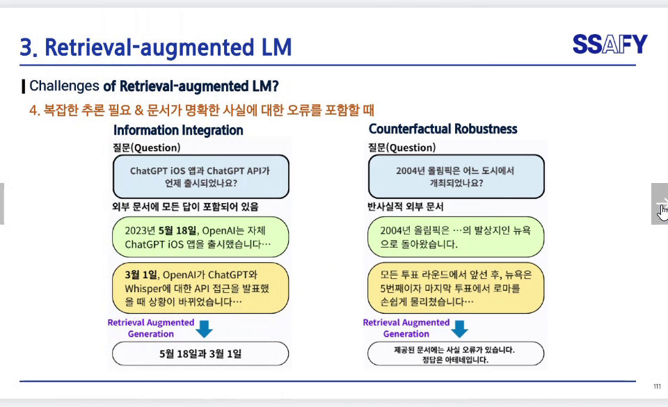
📌 2차시 강의 정리
- Retrieval-Augmented LM (RAG): 언어모델이 추론 시 외부 데이터 저장소(Datastore)를 불러와 활용하는 구조. 기존 LM은 내부 파라미터에만 의존하지만, RAG는 외부 검색(Retrieval)을 통해 최신·정확한 정보를 반영. 장점: 최신 정보 반영, 근거 기반 답변, 모델 재학습 불필요 / 한계: 검색 품질에 따라 성능 변동, 외부 데이터 관리 필요
- Information Retrieval(IR): 사용자의 질의(Query)에 맞는 정보를 대규모 데이터에서 검색·제공하는 과정. 목표: Query와 관련성이 가장 높은 정보를 제공하는 것. 구성요소: User → Query → IR System → Retrieved Information
- Sparse Retriever – TF-IDF: 단어의 중요도를 계산하는 통계 기반 가중치 기법. TF(문서 내 등장 빈도) × IDF(전체 문서에서의 희귀도)
- Dense Retriever (임베딩 기반 검색): BERT 등 임베딩 모델을 사용해 단어·문장을 의미 공간에 매핑, 단어 간 의미적 유사성(Semantic Similarity)을 활용해 검색 수행. Bi-encoder(각각 인코딩, 빠름) vs Cross-encoder(하나로 결합 입력, 정확)
- RALM(RAG)의 필요성: 거대 언어모델(LLM)은 모든 지식을 파라미터에 저장할 수 없음 → 학습 데이터에 자주 등장하는 정보만 잘 기억하고, 최신 정보나 희귀한 사실은 누락됨. RAG는 자주 등장하지 않는 정보에 효과적이며, 모델의 지식 공백을 보완
- RALM의 핵심 과제: 컨텍스트 구성 문제(→ 언어모델의 컨텍스트 길이 확장) / 검색 모델의 성능 의존성(→ 노이즈 포함 학습) / 사전지식과 컨텍스트 간 충돌(→ Grounding 학습 및 답변 회피/거절 학습) / 복잡한 추론 및 사실 오류 대응(→ Information Integration, Counterfactual Robustness)
Basic Concepts of LLM Agents
Agent란?
센서를 통해 환경(environment)을 인지하고, 액추에이터(Actuator)를 통해 환경에 대해 액션(action)을 통해 영향을 미치는 것으로 간주될 수 있는 모든 것 — Russell & Norvig, AI: A Modern Approach (2020)
Agent ← Percepts(Sensors) ← Environment / Agent → Actions(Actuators) → Environment
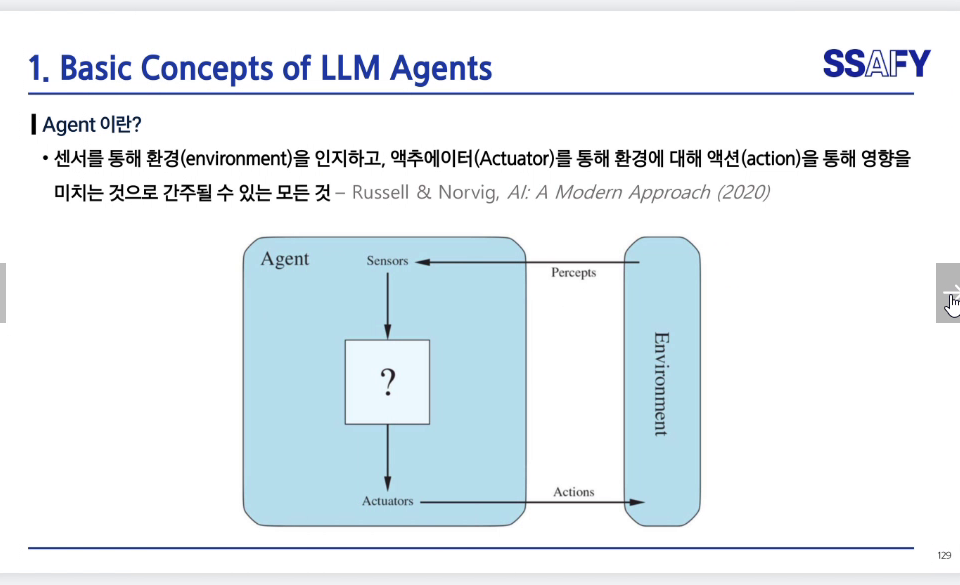
강화학습(RL) — 의사결정의 과학
Computer Science, Engineering, Neuroscience, Mathematics, Economics, Psychology 등 다학제적 교차점에 위치.
Agent의 순환: observation ot → Brain(의사결정) → action At → Environment → reward Rt → 다시 observation
LLM Agent란?
- 거대언어모델(LLM)을 핵심 구조(backbone)로 삼아 환경을 이해하고 행동을 수행하는 에이전트
- LLM-first view: 기존 LLM을 활용한 시스템을 에이전트로 만든다 (예: 서치 에이전트, 심리상담 에이전트, 코드 에이전트)
- Agent-first view: LLM을 AI 에이전트에 통합하여, 언어를 활용한 추론과 의사소통을 가능하게 한다 (예: 로봇, 임바디드 에이전트)
이것은 에이전트인가?
| 시스템 | 판단 |
|---|---|
| 웹을 탐색하는 LLM 시스템 | Yes |
| OS의 파일을 검색하고 코드를 사용해 처리하는 LLM 시스템 | Yes |
| 정보를 검색(Retrieve)하고 생성(generate)하는 LLM 시스템 (RAG) | Probably not (점진적이지 않음) |
| 복잡한 추론을 하는 o1 같은 LLM | No (툴도 없고 외부 환경과 상호작용하지 않음) |
성공적인 에이전트가 갖추어야 할 요건들
LLM Agent 프레임워크
Controller(Foundation Model, 계획 수립) ↔ Tool Set(다양한 기능을 가진 도구들의 집합) ↔ Environment(도구들이 실제로 작동하는 플랫폼 제공) ↔ Perceiver(환경 피드백을 요약해 Controller에 전달)
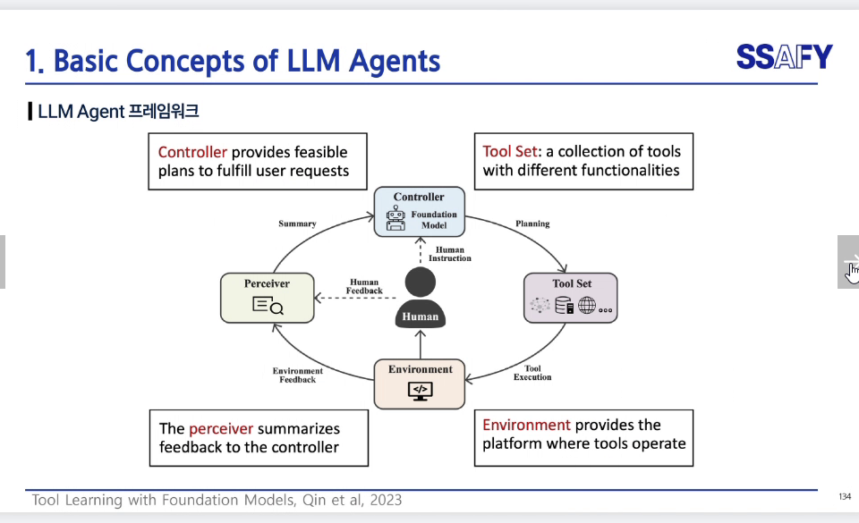
— Tool Learning with Foundation Models, Qin et al. 2023
Tool Usage in LLMs
Tool이란? (LLM 에이전트를 위한)
언어 모델 외부(external)에서 실행되는 프로그램에 연결되는 함수(function) 인터페이스를 의미한다. LLM은 함수 호출과 입력 인자를 생성함으로써 이 도구를 활용할 수 있다.
(a) 로봇팔·자율주행차 등 Agent가 Real world와 물리적으로 상호작용 / (b) User가 Photoshop·웹·Office 같은 GUI Tools를 관찰·조작 / (c) Developer가 Knowledge Graph·Database·GitHub Copilot 같은 Software/SDK를 프로그래밍으로 호출 — Tool Learning with Foundation Models, Qin et al. 2023
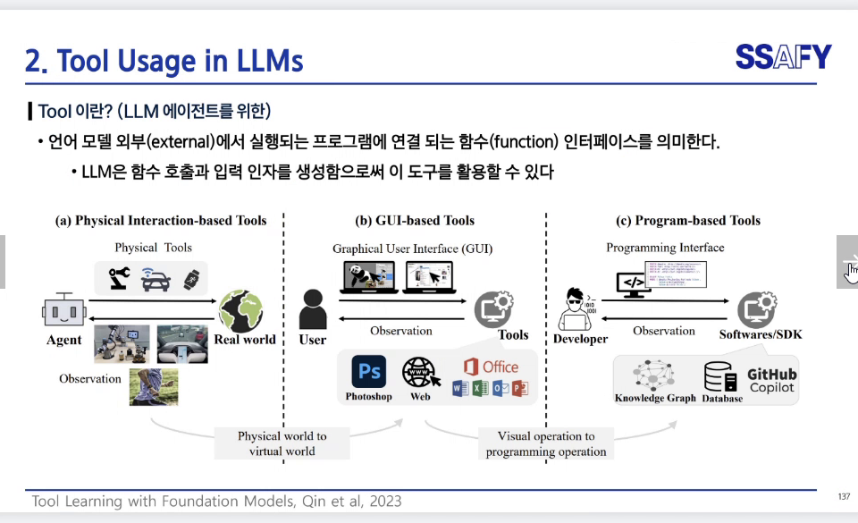
도구 사용 패러다임 (Tool Use Paradigms)
도구 사용(Tool Use): 두 모드 간의 전환 — 텍스트 생성 모드(text-generation mode) ↔ 도구 실행 모드(tool-execution mode)
도구 사용을 유도하는 방법: 추론 시 프롬프트(inference-time prompting) / 학습(Training: Tool Learning)
예: LM이 "It is check_weather()" 텍스트 토큰을 생성 → 서버가 실제 함수를 실행 → "It is sunny today"로 결과를 대체하여 응답
Tool Learning(툴 러닝) 방식 4단계
| 방식 | 핵심 특징 |
|---|---|
| 모방 학습 (Imitation Learning) | 인간의 도구 사용 행동 데이터를 기록하여 LM이 인간의 행동을 모방하도록 학습. 가장 간단하고 직관적인 방식. 예: OpenAI WebGPT (2022) — 검색 엔진 사용을 위한 인간 행동 모방(Clone) + 지도학습 + 강화학습. 단 6000개 데이터로 장문 QA에서 인간보다 좋은 성능 |
| Toolformer (Meta, 2023) | 모델 스스로 학습 데이터 생성(Self-supervised) + 지도학습(SFT). 검색엔진뿐 아니라 달력·계산기 등 여러 API 활용. 3단계: ① API 호출 샘플링(문맥 보고 후보 생성) → ② API 실행(실제 실행하여 응답 획득) → ③ 호출 필터링(문맥에 유용한지 평가·필터링)
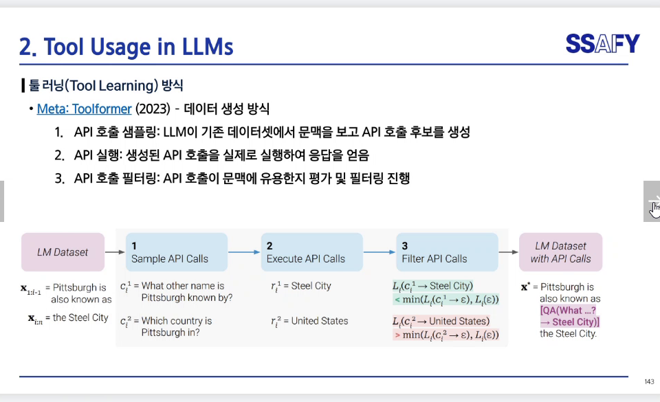 원본 슬라이드 p.143 |
| ToolLLM (2023) | 기존 연구의 한계점인 툴의 다양성과 범용성을 타겟팅. 16000+ 의 실제 API를 활용하여 대규모 학습 데이터 셋 + 특화 언어모델 + 평가 벤치마크 제안. 데이터셋 수집: API 수집 → 명령형(Instruction) 생성 → 정답 어노테이션 & 필터링
비교(툴 개수 / API 개수 / 실제 API 호출 여부): ToolBench(본 연구) 3,451개 툴·16,464개 API·실제 호출 O, ToolAlpaca 400개 툴·400개 API·실제 호출 X, API-Bank 53개 툴·53개 API·실제 호출 O — 기존 벤치마크 대비 규모와 실전성이 압도적으로 큼 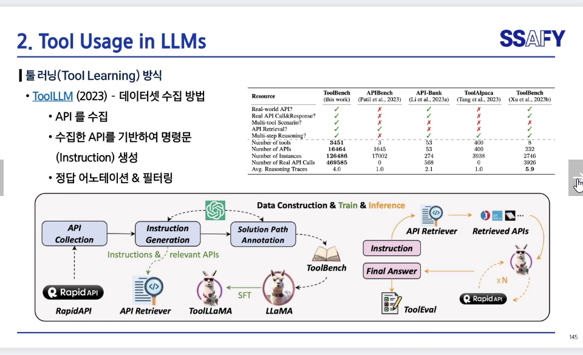 원본 슬라이드 p.145 |
| 멀티모달 Tool Learning (최근 접근) | 멀티모달 대규모 언어모델(MLLM)을 기반으로 도구를 정의하고 활용하는 연구. 예: GUI 에이전트, Embodied 에이전트 — Web/App Agent(Planner가 사전 정의된 API로 이산 행동) vs Computer Use Agent(범용 플래너가 마우스·키보드 조작으로 어떤 가상 작업도 수행) |
Tool Learning — 강화학습 접근
지도 학습을 넘어 에이전트에서의 강화학습을 도입하는 연구. 예: Web-Shepherd — Checklist 생성(Step 1) → Reward Model 기반 체크리스트 채점(Step 2) → 리워드 모델 피드백으로 개선(Refine)
Model Context Protocol (MCP)
Why MCP?
외부 툴을 활용하는 연구가 급증하면서 회사/모델마다 각기 다른 툴 호출 방식 및 스키마를 개발.
- 호환성 부족 (모델마다 다름)
- 재사용 어려움 (같은 툴도 다른 모델에서는 다시 정의해야 함)
비유: USB Type-A, Type-B, Micro-B, Type-C처럼 제각각 다른 커넥터 → MCP는 이를 표준화된 하나의 규격으로 통합
MCP란?
언어 모델이 외부 툴과 상호작용하기 위한 표준화된 방식으로 정의한 프로토콜. 툴 호출, 응답 전달, 컨텍스트 공유를 하나의 공통 규격으로 처리.
Before MCP: LLM마다 Unique API로 각 도구 연결 (N×M 조합 폭발) → After MCP: Model Context Protocol(MCP)로 통합된 API 하나로 모든 도구 연결
연결 구조 비교 — Before / After MCP
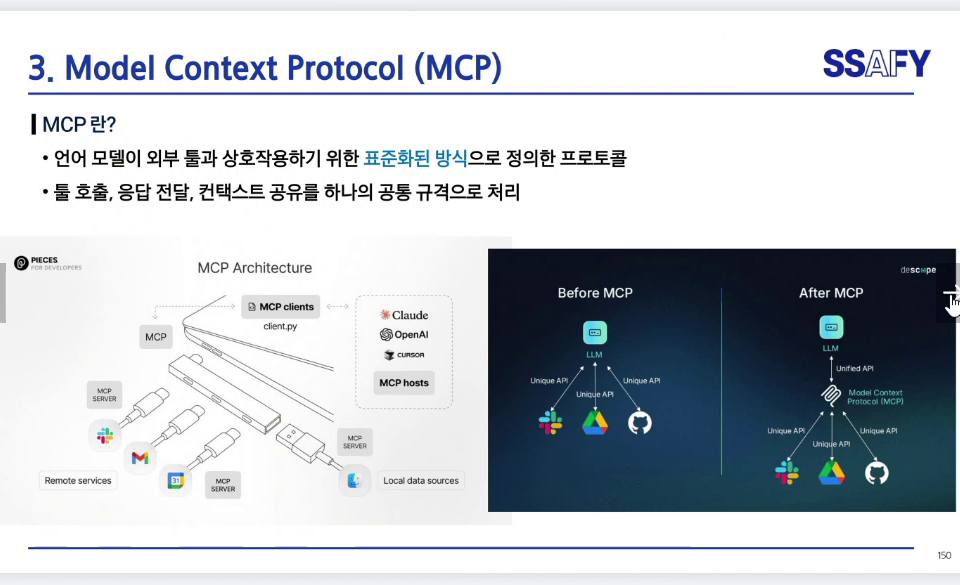
MCP 아키텍처 & 계층(Layer)
| 구성요소 | 역할 |
|---|---|
| MCP Host | 하나 또는 여러 개의 MCP 클라이언트를 조정하고 관리하는 AI 애플리케이션 |
| MCP Client | MCP 서버와의 연결을 유지하며 MCP 호스트가 사용할 수 있도록 MCP 서버로부터 컨텍스트를 가져오는 구성요소 |
| MCP Server | MCP 클라이언트에게 컨텍스트를 제공하는 프로그램 (예: Sentry, Filesystem, Database) |
MCP Host(AI Application) 안의 여러 MCP Client가 각각 One-to-one connection으로 MCP Server 1/2/3(Sentry/Filesystem/Database)에 연결.
Sentry
Filesystem
Database
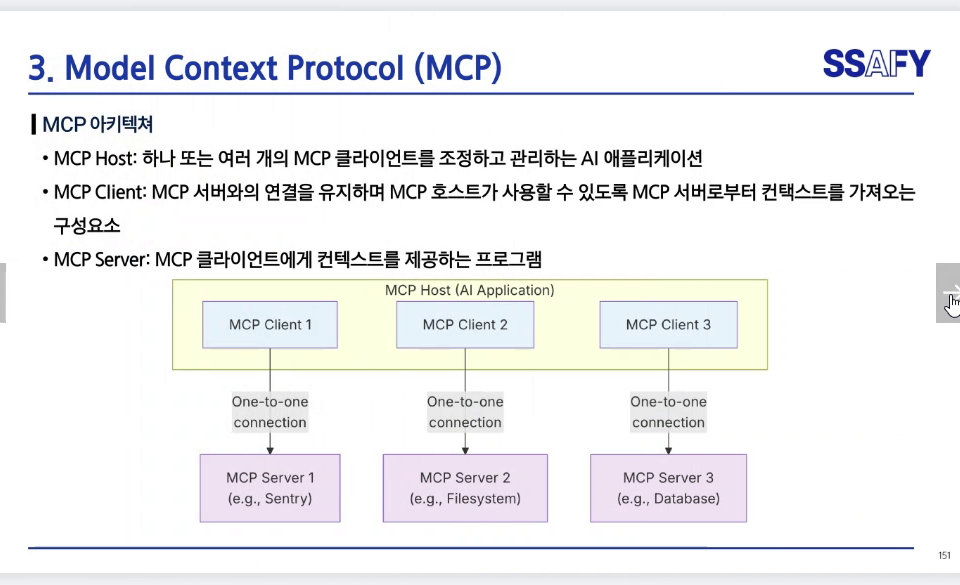
| Data Layer (데이터 계층) | Transport Layer (전송 계층) |
|---|---|
| 클라이언트-서버 통신을 위한 JSON-RPC 기반 프로토콜 정의. 라이프 사이클 관리, 툴, 리소스, 프롬프트 같은 핵심 요소들 포함. (내부 계층/inner layer) | 클라이언트-서버 간 데이터 교환을 가능하게 하는 통신 메커니즘과 채널 정의. 전송 방식에 특화된 연결 수립, 메시지 프레이밍, 인증 포함. (외부 계층/outer layer) |
예시: MCP 이전/이후 호출 방식 비교
단순화된 예: get_weather() 함수
| OpenAI (Function Calling) | Anthropic (Tool Use) | 통합 (MCP, JSON-RPC) |
|---|---|---|
| "tool_calls":[{"type":"function","function":{"name":"get_weather","arguments":{"location":"Seoul"}}}] | "tool_use":{"name":"get_weather","input":{"location":"Seoul"}} | "jsonrpc":"2.0","method":"tools/call","params":{"name":"get_weather","arguments":{"location":"Seoul","units":"celsius"}} |
MCP의 장점
현재: MCP는 학계/업계에서 모두 표준으로 확립. OpenAI가 Anthropic의 MCP 표준을 채택("OpenAI adopts rival Anthropic's standard for connecting AI models to data")
MCP 서버 예시 코드 (FastMCP)
📌 3차시 강의 정리
- LLM Agent란? LLM이 환경을 이해하고 추론·계획·행동을 수행하는 에이전트로, 환경과 상호작용하며 학습함. Controller(계획) - Tool Set(도구 집합) - Environment(플랫폼) - Perceiver(피드백 요약) 프레임워크로 구성
- Tool Learning: 모방 학습(WebGPT) → 자기지도학습(Toolformer) → 대규모 API 데이터셋(ToolLLM) → 멀티모달·강화학습으로 진화
- MCP (Model Context Protocol): 모델/툴마다 제각각이던 연결 방식을 표준화한 프로토콜. Data Layer(JSON-RPC 기반 메시지·툴 정의) + Transport Layer(stdio, HTTP 등 실제 통신) 두 계층으로 구성
Environment Representation & Understanding
환경(Environment)과 에이전트 활용 예시들
에이전트가 환경을 이해하기 위해 필요한 것: 환경에 접근하기 위한 툴(Tool) / 환경의 표현(Representation) / 환경을 이해·탐색하기 위한 방법론들
환경의 표현: 텍스트 (Text)
ALFWorld [Shridhar et al., 2021] — 텍스트 기반 임바디드 에이전트 시뮬레이션 엔진. 물리적 세계에 대한 정보를 언어모델이 텍스트 기반으로 이해하고 명령을 수행할 수 있도록 환경을 표현함.
환경의 표현: 이미지 (Image)
Touchdown [Chen et al., 2018] — Google Street View 기반 내비게이션 및 지시 따르기(Navigation & Instruction Following) 데이터셋. 사용자가 제공한 자연어 지시문에 따라 실제 도시 환경 이미지 내에서 경로 탐색을 수행. 시각적 환경을 텍스트와 연결하여 지시 수행 및 환경 이해를 가능하게 함.
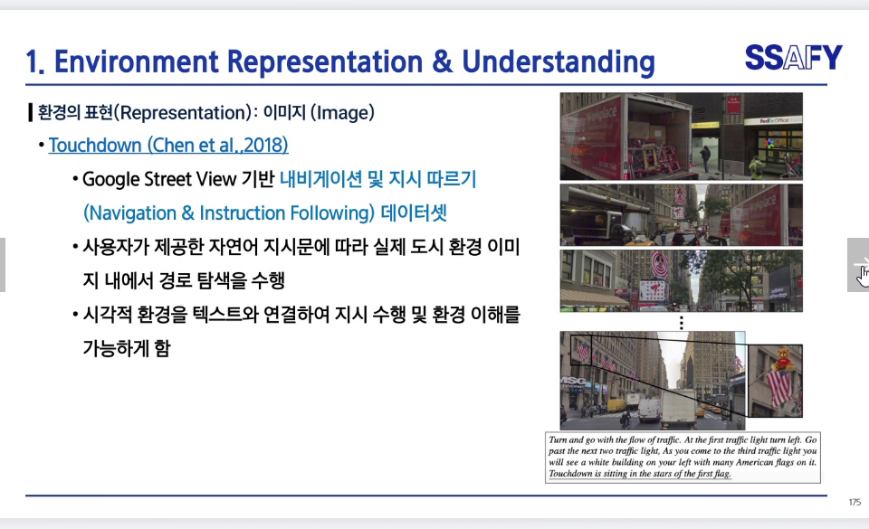
이미지 기반 표현의 문제점: 좋은 성능을 위해 세부적 이해가 중요 (예: OCR, 복잡한 레이아웃에서의 그라운딩) — 많은 모델이 이런 태스크에서 실패하지만 학습으로 개선 가능
환경의 표현: 텍스트 기반 웹 (Textual Web)
WebArena [Zhou and Xu et al., 2024] — 웹 환경을 텍스트(HTML, DOM, Accessibility Tree)로 표현하여 에이전트가 상호작용 가능. 단순한 스크린샷 이미지 대신 구조화된 웹 표현을 제공, 에이전트가 버튼 클릭·항목 선택·값 입력 같은 작업을 더 정확히 수행할 수 있음.
복잡한 환경은 어떻게 이해할 수 있을까?
모델은 자신이 상호작용하는 환경에 대해 모든 것을 알고 있지 않다. 일부 지식은 LLM 파라미터 안에 포함(예: 코딩 지식, 자주 쓰는 웹사이트 탐색법), 다른 지식은 실시간으로 환경과의 상호작용을 통해 발견해야 함.
| 접근법 | 핵심 아이디어 |
|---|---|
| 환경 특화 프롬프트 (Environment-specific Prompts) | 환경에 맞게 수동으로 프롬프트 제작 (예: SteP [Sochi et al. 2023] - 웹 탐색용 프롬프트 템플릿). 문제점: 일반화(Generalization) — 특정 환경에는 잘 작동하지만 새 환경에서는 성능 저하 |
| 비지도 프롬프트 유도 (Unsupervised Induction of Prompts) | Agent Workflow Memory [Wang et al. 2024] - 성공적으로 수행된 워크플로우(workflow)를 기억, 이를 기반으로 새로운 프롬프트를 생성해 에이전트에 제공. 프롬프트를 수동 설계하지 않고, 에이전트가 경험을 통해 자동 생성 및 일반화 |
| 환경 탐색 (Environment Exploration) | 모델이 환경을 탐색할 때 보상(reward)을 부여하여 학습을 유도 → 호기심(curiosity) 기반 보상. 예: Super Mario Bros에서 외적 보상 없이(without rewards) 예측 불가능한 상태공간 진입 시 내적 보상 부여 → 탐색 가속 |
| 탐색 기반 궤적 기억 (Exploration-based Trajectory Memorization) | BAGEL [Murtey et al. 2024] - 명령어를 샘플링하여 실행한 뒤, 더 정확한 새로운 명령어로 궤적(trajectory)을 재라벨링. LM-agent가 환경을 탐색하고, LM-labeler가 이를 바탕으로 지시를 다시 정제. 기존 데이터에 의존하지 않고, 탐색과 자기교정(self-correction)을 통해 데이터 생성 → 에이전트의 일반화 성능과 환경 적응력 향상 |
Reasoning & Planning
Controller: Planning 종류
| 국소적 계획 (Local Planning) | 전역적 계획 (Global Planning) |
|---|---|
| 한 단계씩(step by step) 계획을 세움. 매 스텝마다 사용할 하나의 툴(tool) 결정. 단순하고 직관적이나, 장기 의존성 문제 발생 가능 | 실행 가능한 전체 계획 경로(planning path)를 한 번에 생성. 여러 개의 툴을 조합하여 시퀀스 형태로 결정. 효율적이나, 복잡한 환경에서는 실패 가능 |
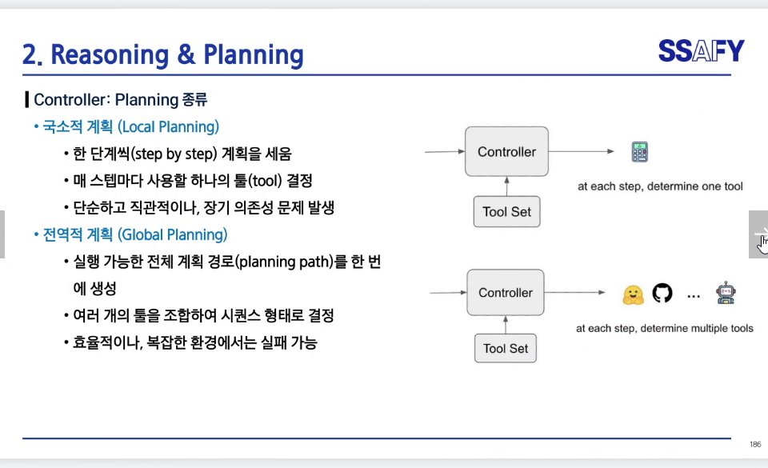
Local Planning — ReAct
ReAct [Yao et al. 2023] — 추론(reasoning)과 액션(action)을 결합하여 에이전트가 환경과 상호작용하도록 하는 방식. 단순한 추론/행동 분리를 넘어, 두 과정을 결합해 상황 응형(local) 계획 가능. 다양한 도구 사용 및 웹 탐색, 추론 기반 Q&A 등에서 좋은 성능.
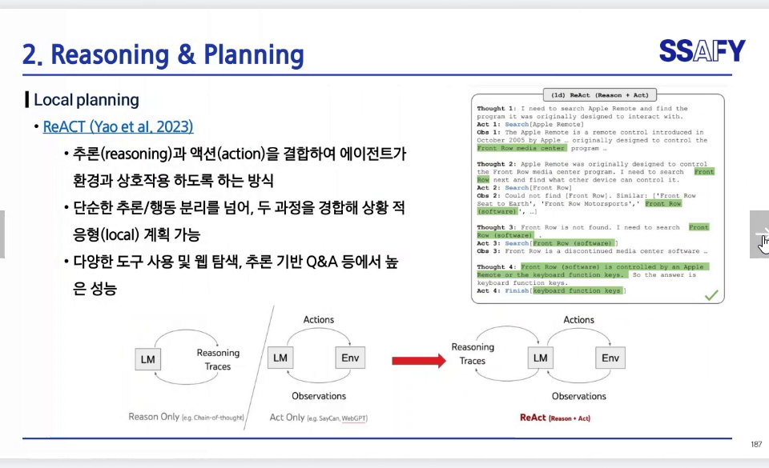
Global Planning — Plan-and-Solve Prompting
[Wang et al. 2023] — 전체 계획을 세운 뒤, 그 계획에 따라 순차적으로 문제를 해결. 단순한 step-by-step 방식보다 체계적이고 안정적인 추론 가능. 복잡한 문제 해결에서 오류 축적 감소.
예: "Let's first understand the problem and devise a plan to solve it. Then, let's carry out the plan..." 형태로 Plan → Solution 순서로 진행
오류 식별과 회복 (Error identification and Recovery)
에이전트는 에러/실수에서 회복할 방법이 필요. Reflexion [Shinn et al. 2023] — 수행한 궤적(trajectory)을 평가 후 잘못된 부분을 Reflection 단계에서 분석하여 재시도하는 방식. 단순히 오류를 탐지하는 것에 그치지 않고, 스스로 반성(reflect) 후 개선된 행동을 수행. 의사결정, 프로그래밍, 추론 등 다양한 태스크에서 성능 회복 및 향상을 보여줌.
계획 재검토 (Revisiting Plans)
CoAct [Hou et al. 2024] — 에이전트가 실행 도중 계획을 재검토(revisit)하고 수정 가능. 두 개의 에이전트(Global Planning Agent + Local Execution Agent)가 서로 협력하여 오류 발생 시 재계획과 피드백을 수행. 초기 계획이 불완전하더라도 실행 과정에서 보완 가능 → 장기 작업(Long-horizon tasks)에서 안정성과 성공률 향상.
LangChain
LangChain 이란?
- LLM 기반 애플리케이션을 빠르게 개발할 수 있는 오픈소스 프레임워크
- LLM을 다양한 데이터/툴과 연결하여 강력한 애플리케이션 개발 가능
- 연구와 산업 현장에서 빠르게 표준으로 자리잡음
LangChain 특징
- 다양한 LLM provider(OpenAI, Anthropic, Google 등)와 통합하여 모델/회사별 API 차이를 공통 인터페이스로 관리 가능
- Prompt, Memory, Tools와 같은 컴포넌트들이 모듈화 되어 있어 재사용성과 확장성 확보
- LangGraph 기반으로 복잡한 워크플로우를 시각적으로 설계 및 관리 가능
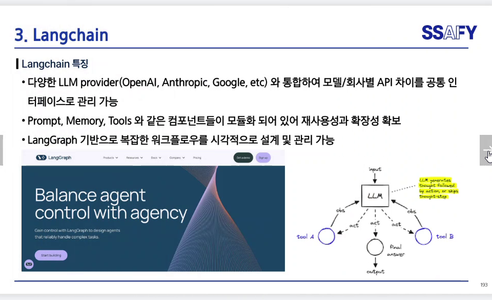
LangChain 주요 컴포넌트
Langchain 튜토리얼 리소스
| 주제 | 링크 |
|---|---|
| RAG w/ Langchain | python.langchain.com/docs/tutorials/rag |
| Agent w/ Langchain | python.langchain.com/docs/tutorials/agents |
| Tools 통합 리스트 | python.langchain.com/docs/integrations/tools |
| MCP w/ Langchain | github.com/langchain-ai/langchain-mcp-adapters |
MCP w/ LangChain
MCP를 langchain으로 활용할 수 있도록 최근 langchain에서 개발한 라이브러리. 자기만의 MCP 서버를 만들 수 있게 되었음.
구조: MCP Servers(각 서버가 여러 tool 보유, 예: Math, Data) ↔ MCP Clients(호스트 앱 내 여러 연결 유지) — 예: Claude Desktop App Client, PyClient(load_mcp_tools → LangGraph Agent)
4차시 전체 총정리
📌 4차시 강의 정리
- LLM Agent란? LLM이 환경을 이해하고 추론·계획·행동을 수행하는 에이전트로, 환경과 상호작용하며 학습함
- Reasoning & Planning: 국소·전역 계획을 통해 문제를 해결하며, 오류를 Reflexion 등으로 스스로 식별·복구
- LangChain: LLM 에이전트를 구현하기 위한 오픈소스 프레임워크로, LangGraph·MCP를 통해 복잡한 워크플로우 설계 및 제어 가능
🗺️ 전체 흐름 한눈에 보기
| 차시 | 핵심 흐름 |
|---|---|
| 1차시 | Pre-training → Post-training(Instruction-tuning → RLHF → DPO/RLVR) |
| 2차시 | Information Retrieval(Sparse/Dense) → RAG 필요성·파이프라인 → 4대 Challenge와 대응 |
| 3차시 | LLM Agent 기본개념 → Tool Learning(모방→자기지도→대규모→멀티모달/RL) → MCP 표준화 |
| 4차시 | 환경 표현(텍스트/이미지/웹) → 추론·계획(Local/Global, Reflexion, CoAct) → LangChain 실전 프레임워크 |